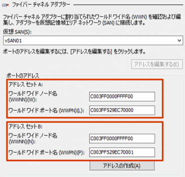
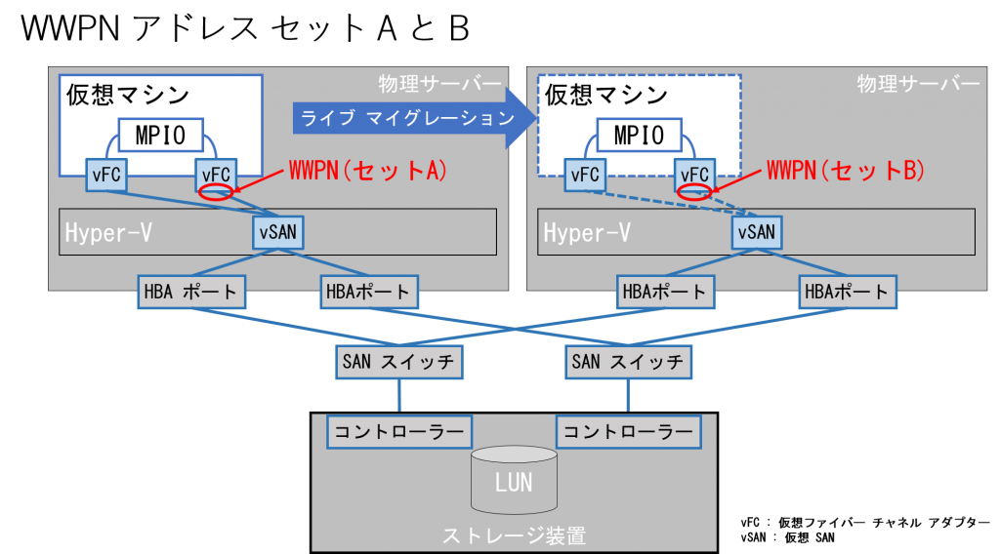
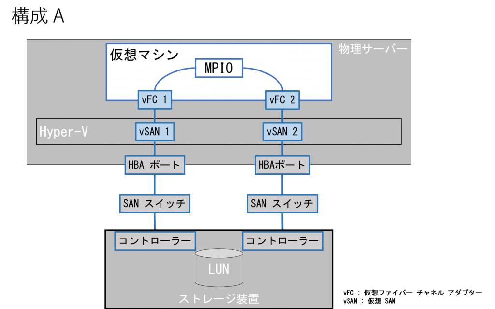
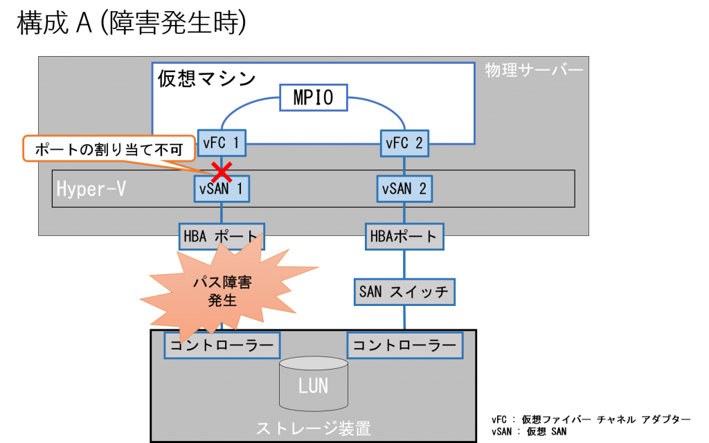
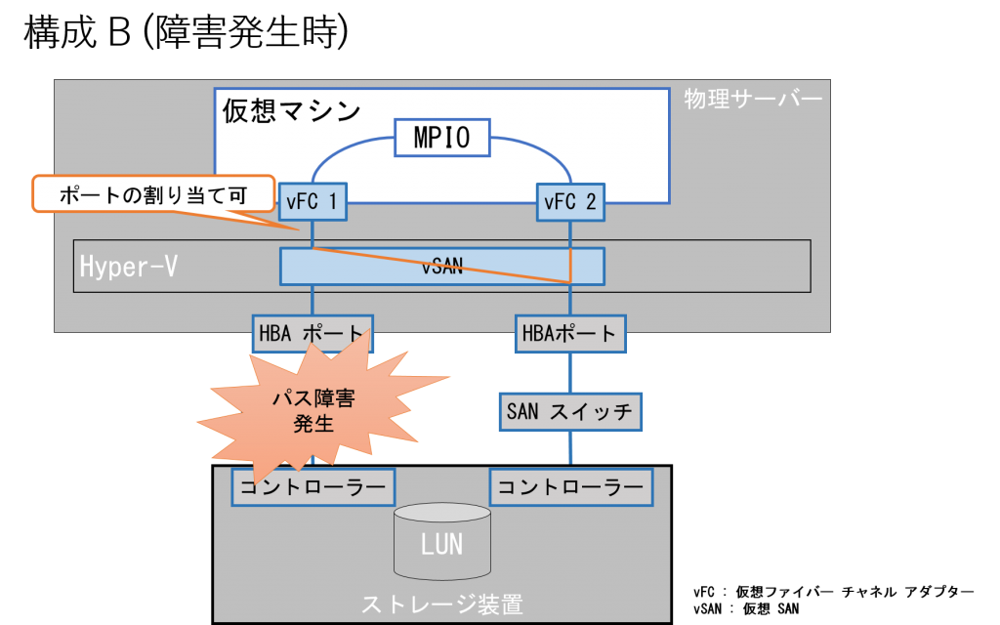
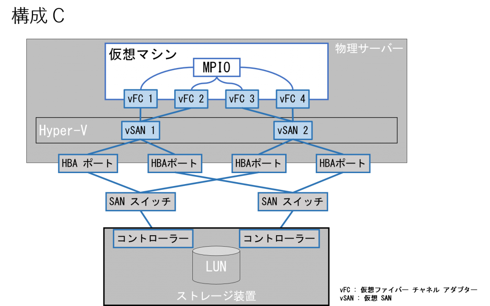

※ 本記事は弊社の Technet から移行した記事です。
いつも弊社製品をご利用いただきまして誠にありがとうございます。日本マイクロソフトの Windows サポートチームです。
今回は Hyper-V 環境にて仮想 SAN を利用する場合の設計の留意点についてご紹介します。
1. Hyper-V の仮想 SAN の概要
複数の仮想マシンを 1 台のHyper-V 上の物理サーバーで稼働させる環境では、外部ストレージを利用することが多くあります。外部ストレージとして FC 接続のストレージを利用する環境において、仮想マシンから直接 FC 接続のディスクを利用するために、Windows Server 2012 以降の Hyper-V では仮想 SAN と仮想ファイバー チャネル アダプターの機能が用意されています。
仮想 SAN では Hyper-V 環境内で各仮想マシンに SAN 環境を提供するため、Hyper-V マネージャーの “仮想 SAN マネージャー” から物理ファイバー チャネル ポートのグループに “仮想 SAN 名” を定義します。同じく “仮想 SAN マネージャー” では、個々の仮想マシンに動的に割り当てることができる WWPN (World Wide Port Number) の範囲や WWNN (World Wide Node Number) を定義することができます。
WWPN は、ネットワーク上のカード (ポート) を識別する MAC アドレスに似ており、ファイバー チャネル HBA (Host Bus Adapter) に提供される固有の番号です。この固有の番号は、ストレージ装置が特定の HBA を認識するために利用されます。また、WWNN は 1 台のデバイスに 1 つのみ付加される識別子です。
2. 仮想 SAN / 仮想ファイバー チャネル アダプターを利用するための前提条件
Hyper-V 環境で、仮想 SAN / 仮想ファイバー チャネル アダプターを利用するためには、ハードウェアにも要件があります。以下のリンクに前提条件の記載がありますので、ご利用いただく環境が前提条件を満たしているかを確認してください。
Implement Hyper-V Virtual Fibre Channel
前提条件にある NPIV (N_Port ID Virtualization) とは 1 つの物理ファイバー チャネル ポートに複数の複数の仮想ファイバー チャネル アダプターをマッピングし、仮想的な WWPN を割り当てるファイバー チャネル ポートの仮想化技術のひとつです。
このポイントとしては、NPIV 対応の “SAN” が必要であることです。このことは通常、NPIV 対応の “SAN スイッチ” が必要であることを意味します。つまりストレージに直結の構成では仮想 SAN は構成できません。
NPIV 対応の物理 HBA が物理ホスト サーバーには必要ですが、ハードウェアによっては、NPIV の機能を利用するために、ハードウェアの設定が必要な場合はあります。具体的な設定手順につきましては利用する HBA カードのベンダーに確認してください。また、1 つの NPIV のポートからアクセスできるターゲットの WWPN 数が制限されている場合があります。仮想マシンから一部のターゲットのディスクまたはテープが認識できない場合は、このようなハードウェアの制限に抵触していないかの確認および HBA カードのドライバーのバージョンが NPIV に対応しているか (既知の不具合がないか) をまず確認する必要があります。
また、Hyper-V 環境では、”パス スルー ディスク” という物理サーバーに接続されたディスクをそのまま仮想マシンに接続することができる機能も用意されています。この機能を利用して FC 接続など外部ストレージを仮想マシンから利用することもできますが、Windows Server 2012 以降ではパス スルー ディスクを利用するメリットは少なく、推奨されていません。
パス スルー ディスクはクラスター環境で、仮想マシン リソースとは別のリソースとして管理しなくてはなりません。また、クラスターを構成していない Hyper-V ホスト間のライブ マイグレーションもサポートされていないなど、管理面でも機能面でもパス スルー ディスクを使うメリットはありません。
そのため、ハードウェアなどの要件を満たせる場合は、仮想 SAN 環境を利用することを検討ください。
Windows Server 2012 以降では、VHDX が登場し、仮想ディスクの最大サイズの点でも、パフォーマンスの点でも、物理ディスクを直接利用した場合とほぼ同等になっています。そのため、もしハードウェアの要件を満たせない場合でも、パス スルー ディスクを利用せずに、VHDX の仮想ディスクを利用することをお奨めします。
Migrate Pass-Through Disk Storage by Using Hyper-V in Windows Server 2012 R2
3. 仮想ファイバー チャネル アダプターの設定
仮想 SAN の設定については項番 1 で触れましたが、この項目では仮想ファイバー チャネル アダプターの設定について紹介します。
仮想マシンへの仮想ファイバー チャネル アダプターの追加はネットワーク アダプターと同様に仮想マシンの “設定” から行うことができます。
仮想ファイバー チャネル アダプターを追加し、接続する仮想 SAN を選択します。ポートのアドレスは既定では仮想 SAN の定義の際に設定した WWNN や WWPN の範囲から、自動的に割り当てられますが、固定で割り当てる必要がある場合には、”アドレスを編集する” ボタンから、任意の値を割り当てることが可能です。通常 SAN スイッチにて zoning を行うことでアクセス可能な LUN を制限するので、WWPN も設計に沿った値にすることが一般的です。

ここで設定可能なアドレス セット A とアドレス セット B はクラスター環境でライブ マイグレーションを行う際に利用されます。Hyper-V では、すべての LUN が移行先コンピュータで使用可能であることを確認してから、ライブ マイグレーションを実行するため、移行前と移行後で異なる WWPN が割り当てられる必要があります。そのため、仮想マシンにはライブ マイグレーション用に 2 つのアドレスを セットを事前に定義しておく必要があります。また、これらのアドレス セットはライブ マイグレーションを行うたびに変更されるため、SAN スイッチで zoning を行う際には、両方のアドレス セットがいずれのクラスター ノードからもアクセスできるように設定します。

4. マルチ パス接続の場合の設計
本項では、仮想 SAN を経由してアクセスするディスクをマルチパス構成にする場合の設計ポイントについてご紹介いたします。
Hyper-V の仮想 SAN 機能では仮想マシンの起動時に仮想ファイバー チャネル アダプターを物理の HBA のポートにマッピングする機能を提供します。”起動” 時にマッピングンを行うのみで、例えば仮想 SAN に複数の物理 HBA のポートをアサインしても、片方のポートの障害時にそのポートの紐づけられていた仮想ファイバー チャネル アダプターのポートを障害でないポートに再マッピングする、いわゆるフェールオーバーなどは行われません。そのため、ディスクへのマルチパス化を行う際は、仮想マシン OS にて MPIO 機能を有効化し、パス障害時の挙動を制御する必要があります。
ここで、パスの耐障害性のために 2 パスのマルチパス構成を行う例にして、設計のポイントをご紹介いたします。
2 パスのマルチパス構成の場合には、以下の 2 つの設計が可能です。
A. 2 つの物理 HBA ポートでそれぞれ別の仮想 SAN を構成し、仮想マシンにはそれぞれの仮想 SAN に接続する 2 つの仮想ファイバー チャネル アダプターを作成する。
B. 2 つの物理 HBA ポートで 1 つの仮想 SAN を構成し、仮想マシンには同一の仮想 SAN に接続する 2 つの仮想ファイバー チャネル アダプターを作成する。
先述の通り、仮想 SAN 内で障害時のフェールオーバーは行われないため、B の構成に 1 つの仮想ファイバー チャネル アダプターを作成する構成は要件を満たすことができません。
以下にそれぞれの構成を図にします。

A の構成の場合、必ず 2 つの仮想ファイバー チャネル アダプターに別の物理ポートがアサインされるため、片方のパスが障害になっても MPIO でマルチパス化されたディスクへの I/O を継続することが可能です。しかしながら、デメリットとしては、片方のパスの障害時に仮想マシンの “起動” ができない事象が発生します。これはパスのマッピングは仮想マシンが起動するタイミングにのみ行われますが、その際にマッピング可能なパスがないと、リソースの割り当てが行えず、エラーとなるためです。

B の構成の場合、A の構成のデメリットである仮想マシンが “起動” できない問題は発生しません。しかし、”起動” 時に仮想ファイバー チャネル アダプターに同一の物理ポートが割り当てられていた場合、その割り当てられたポートに障害が発生すると仮想マシン OS の両方のパスが障害となってしまう懸念があります。この点については、仮想ファイバー チャネル アダプターにはラウンド ロビンで物理 HBA ポートがアサインされるため、基本的には別のポートが割り当てられます。もし、起動後に別のパスが割り当てられているかを確認したい場合は、NPIV のポート割り当てをコマンドレットで確認することも可能です。(後述します。)

つまり、耐障害性を担保しつつ、容易な運用のためには、B の構成が推奨であるといえます。
なお、パスの冗長化の目的として、耐障害性だけでなく帯域確保の目的がある場合、A の構成でも B の構成でも障害発生時は物理 HBA ポート 1 つで I/O することになるため、帯域としては縮退することになります。もし物理 HBA ポートを 4 つ用意できる場合は、2 つずつに分けて、仮想 SAN を構成 (以下の構成 C) することで障害時の帯域も確保できる構成となります。

構成の設計については、以下にガイドがありますので、必要に応じてご参照ください。
Hyper-V Virtual Fibre Channel Design Guide
ただし、いずれの構成の場合でも、障害発生時に “起動” した仮想マシンは、パス障害からの復旧後、再度、起動を行うまで、複数ポートにマッピングはされません。ここでの再度の起動とは、仮想マシン OS 内部からの再起動では反映されず、シャットダウンおよび Hyper-V マネージャーなどからの起動の操作が必要です。(仮想マシン ワーカー プロセスである vmwp.exe のリサイクルが必要です。)
最後に Hyper-V ホストの物理 HBA の WWPN や仮想マシン OS 内部から、自身の仮想ファイバー チャネル アダプターに割り当てられた WWPN の値や、仮想マシンの起動後にマッピングされた WWPN が正しく複数パスに分散されているかをコマンドから確認したいこともあるかと思います。その場合は以下の PowerShell コマンドレットで確認できますのでご紹介いたします。
• ポートにアサインされた WWPN を確認する
wmic /namespace:\\root\wmi\ path MSFC_FibrePortHbaAttributes get /value 出力例)
Active=TRUE
HBAStatus=0
InstanceName=PCI\VEN_1077&DEV_2432&SUBSYS_7041103C&REV_03\4&160c5d44&0&0018_0
UniquePortId=18446708891294105616
__PATH=
__NAMESPACE=
:(省略)
NodeWWN={xx,xx,xx,xx,4,195,246,37} <--- 16 進数で xx:xx:xx:xx:04:c3:f6:25
NumberofDiscoveredPorts=2
PortActiveFc4Types={0,1,0,0,0,0,0,0,0,0,0,0,0,0,0,0,0,0,0,0,0,0,0,0,0,0,0,0,0,0,0,0}
PortFcId=66048
PortMaxFrameSize=2048
PortSpeed=8
PortState=2
PortSupportedClassofService=8
PortSupportedFc4Types={0,1,0,0,0,0,0,0,0,0,0,0,0,0,0,0,0,0,0,0,0,0,0,0,0,0,0,0,0,0,0,0}
PortSupportedSpeed=11
PortType=5
PortWWN={xx,xx,xx,xxx,4,195,246,36} <--- 16 進数で xx:xx:xx:xx:04:c3:f6:24 • NPIV 機能でアサインされた WWPN を確認する
wmic /namespace:\\root\wmi\ path MSFC_FibrePortNPIVAttributes get /value 出力例)
Active=TRUE
InstanceName=PCI\VEN_1077&DEV_2432&SUBSYS_7041103C&REV_03\4&160c5d44&0&0018_0
NumberVirtualPorts=1 <--- 1 つの仮想ファイバー チャネル アダプターがマッピングされている
WWNN={xx,xx,xx,xx,4,195,246,37}
WWPN={xx,xx,xx,xx,4,195,246,36}__PATH=
__NAMESPACE=
:(省略)
VirtualName={72,121,112,101,114,45,86,32,86,77,32,221,252,200,0,0,0,0,0,0,0,0,0,0,0,0,0,0,0,0,0,0,0,0,0,0,0,0,0,0,0,0,0,
0,0,0,0,0,0,0,0,0,0,0,0,0,0,0,0,0,0,0,0,0}
WWNN={192,3,255,0,0,255,255,0} <--- 16 進数で C0:03:FF:00:00:FF:FF:00
WWPN={192,3,255,82,158,199,0,0} <--- 16 進数で C0:03:FF:52:9E:C7:00:00 なお、ポートの情報については類似の情報を採取するツールとして fcinfo (Fibre Channel Information Tool) というツールがあります。
Fibre Channel Information Tool (fcinfo)
• fcinfo でポートの情報を確認する
fcinfo.exe /ports /details 出力例) FC ポートからケーブルを抜線した場合
com.xxxxxxx-xxxxxxxx-0, num: 1
-----------------------------------------------------------------------------
NodeWWN: xx:xx:xx:xx:04:c3:f6:25
PortWWN: xx:xx:xx:xx:04:c3:f6:24
PortFcId: xxxxxxx
PortSymbolicName:
PortType: N_Port
PortState: linkdown <--- リンク ダウン状態の場合
PortSupportedClassofService: Class_3
PortSpeed: unkn
PortMaxFrameSize: 2048
FabricName: 00:00:00:00:00:00:00:00 こちらは PowerShell のコマンドレットの出力結果よりも見やすく結果を得ることができます。例えば、PowerShell の PortState がステータス コードでの表示となっていますが、fcinfo では不要な情報表示も少なく、ポートのステータスについても具体的な状況を簡単に確認することができます。
fcinfo は弊社にて公開されている無償のツールですが、本ツール自身はサポートの対象ではありませんので、ご参考としてご紹介します。対象環境で問題なく情報採取可能かどうかは、十分検証の上、ご利用ください。
物理サーバーで多数の CPU が搭載されている環境では、Hyper-V 上の仮想マシンとして DB サーバーなどを動かすことも珍しくありません。そのような環境では、外部接続のストレージを利用する構成も多くあります。本ブログの情報が Hyper-V 環境の仮想 SAN / 仮想ファイバー チャネル アダプターの有効な設計のお役に立てれば幸いです。